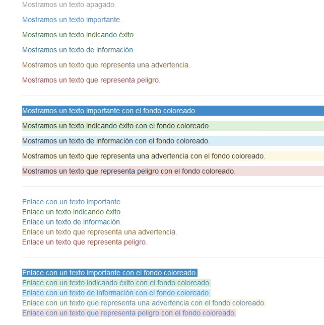

Bootstrap dispone una serie de clases para definir colores del texto y fondo según el significado de dicho contenido. Esta característica es similar a las clases que vimos orientadas al significado de botones.
Si accedemos al código fuente del archivo bootstrap.css podemos ubicar las clases referentes a colores en las tipografías:
.text-muted {
color: #777;
}
.text-primary {
color: #337ab7;
}
a.text-primary:hover {
color: #286090;
}
.text-success {
color: #3c763d;
}
a.text-success:hover {
color: #2b542c;
}
.text-info {
color: #31708f;
}
a.text-info:hover {
color: #245269;
}
.text-warning {
color: #8a6d3b;
}
a.text-warning:hover {
color: #66512c;
}
.text-danger {
color: #a94442;
}
a.text-danger:hover {
color: #843534;
}
.bg-primary {
color: #fff;
background-color: #337ab7;
}
a.bg-primary:hover {
background-color: #286090;
}
.bg-success {
background-color: #dff0d8;
}
a.bg-success:hover {
background-color: #c1e2b3;
}
.bg-info {
background-color: #d9edf7;
}
a.bg-info:hover {
background-color: #afd9ee;
}
.bg-warning {
background-color: #fcf8e3;
}
a.bg-warning:hover {
background-color: #f7ecb5;
}
.bg-danger {
background-color: #f2dede;
}
a.bg-danger:hover {
background-color: #e4b9b9;
}
Veamos una página que implementa un conjunto de párrafos y enlaces utilizando estas clases:
<!DOCTYPE html>
<html>
<head>
<title>Prueba de Bootstrap</title>
<link href="css/bootstrap.min.css" rel="stylesheet">
<meta name="viewport" content="width=device-width, initial-scale=1">
</head>
<body>
<div class="container">
<p class="text-muted">Mostramos un texto apagado.</p>
<p class="text-primary">Mostramos un texto importante.</p>
<p class="text-success">Mostramos un texto indicando éxito.</p>
<p class="text-info">Mostramos un texto de información.</p>
<p class="text-warning">Mostramos un texto que representa una advertencia.</p>
<p class="text-danger">Mostramos un texto que representa peligro.</p>
<hr>
<p class="bg-primary">Mostramos un texto importante con el fondo coloreado.</p>
<p class="bg-success">Mostramos un texto indicando éxito con el fondo coloreado.</p>
<p class="bg-info">Mostramos un texto de información con el fondo coloreado.</p>
<p class="bg-warning">Mostramos un texto que representa una advertencia con el fondo coloreado.</p>
<p class="bg-danger">Mostramos un texto que representa peligro con el fondo coloreado.</p>
<hr>
<a class="text-primary" href="#">Enlace con un texto importante.</a><br>
<a class="text-success" href="#">Enlace un texto indicando éxito.</a><br>
<a class="text-info" href="#">Enlace un texto de información.</a><br>
<a class="text-warning" href="#">Enlace un texto que representa una advertencia.</a><br>
<a class="text-danger" href="#">Enlace un texto que representa peligro.</a>
<hr>
<a class="bg-primary" href="#">Enlace con un texto importante con el fondo coloreado.</a><br>
<a class="bg-success" href="#">Enlace con un texto indicando éxito con el fondo coloreado.</a><br>
<a class="bg-info" href="#">Enlace con un texto de información con el fondo coloreado.</a><br>
<a class="bg-warning" href="#">Enlace con un texto que representa una advertencia con el fondo coloreado.</a><br>
<a class="bg-danger" href="#">Enlace con un texto que representa peligro con el fondo coloreado.</a>
</div>
</body>
</html>
En pantalla tenemos un resultado similar a:
